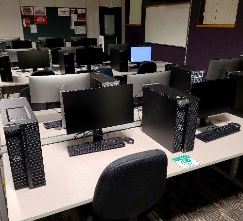

School and Residence
Welcome to Fanshawe College, located in London Ontario and the surrounding area. Fanshawe has been in operation since 1967 and
offers 200+ programs and pathways for any demographic. The college spans across London giving opportunities for interactive
learning facilities such as the airport for aviation classes, downtown with tech classes along with many more great facilities
and opportunities. This website will take you through a quick look at the school and some of the extracurriculars and services
offered by the college.
School and Study areas
Fanshawe main study areas are open 24/7 allowing for optimal performance and flexibility when it comes to studying. There are many
study options to choose from, whether you want to be by the food services in case you get hungry, wellness center for a fitness break
or just a quiet room to study that is not your dorm, the options are there. Some study areas may be more equipped for what your neeeds
are depending on classes but thats why there are so many to choose from, and if not studying they are still a great place to hang out.

Residence
Fanshawe’s main campus contains three main residence buildings, Falcon, Peregrine and Merlin house. Each building is a little
different and also comes with its different groups of people and room layouts. The residence is complete with dorms, lounges on
every floor, a laundry area and common kitchens as well as a few individual perks depending on the building you live in.